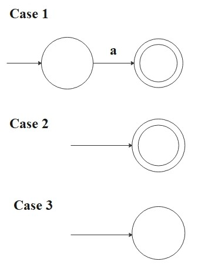

Introduction
Automata theory is a foundational area of theoretical computer science and discrete mathematics that studies abstract
machines and computational problems. It provides a rigorous framework for understanding formal languages, state-based
computation, and algorithmic processes. For instance, automata theory is essential in compiler design, natural language processing,
software verification, and the study of complexity classes in the theory of computation. By exploring automata theory, we
will develop a deeper understanding of computation, logic, and the mathematical principles governing algorithmic processes.
Finite automata & Regular Langualges
Since real computers are too complicated, depending on the features we want to focus on, we introduce different computational models.
The simplest computational model can be the finite automaton (finite state machine).
A finite automaton is a 5-tuple \((Q, \Sigma, \delta, q_0, F)\) where
- \(Q\) is a finite set called the states
- \(\Sigma\) is a finite set called the alphabet
- \(\delta: Q \times \Sigma \to Q\) is the transition function
- \(q_0 \in Q\) is the start state
- \(F \subseteq Q\) is the set of accept states
Let \(A\) be the set of all strings that machine \(M\) accepts. We say that \(A\) is the language of
machine \(M\) and write:
\[
L(M) = A
\]
We also say that \(M\) recognizes \(A\). Moreover, a language is called a regular language if
some finite automaton recognizes it.
Consider the following finite automaton.
First, this directed multigraph is called the state diagram of the finite automaton.
It has three states, \(Q = \{q_0, q_1, q_2\}\), where \(q_0\) is the start state, and \(F = \{q_1\}\) is the
accept state which is denoted by a double circle. The arrows are transitions \(\delta\) from one state to another state.
This automaton processes some string(in this case, \(\Sigma =\{0, 1\}\)) as an input and returns either accept or reject
as an output.
For example, if input string is \(1101101\), this automaton processes the string as follows:
Start reading
Read 1, move from \(q_0\) to \(q_1\)
Read 1, stay in \(q_1\)
Read 0, move to \(q_2\)
Read 1, move to \(q_1\)
Read 1, stay in \(q_1\)
Read 0, move to \(q_2\)
Read 1, move to \(q_1\)
End reading
Return "accept."
This automaton recognizes strings that end 1 with an even number of 0s. For example, "10100" is recognized because
it ends 1 with two 0s, but "1011000" is not because it ends three 0s. Also, a string ends 1 means it ends 1 with zero 0s,
and it is recognized since zero is an even number.
Regular Operations
Let \(A\) and \(B\) be languages. The regular operations are defined as follows:
- Union:
\(A \cup B = \{x \, | \,x \in A \text{ or } x \in B\}\)
- Concatenation:
\(A \circ B = \{xy \, |\, x \in A \text{ and } y \in B\}\)
Note: \(\emptyset \circ A = \emptyset\), and \(\{\epsilon\} \circ A = A\).
Note: \(A \circ A = A^2\), and we define \(A^0 = \{\epsilon\}\).
- Star:
\(A^* = \{x_1x_2 \cdots x_k \, | \, k \geq 0 \text{ and each } x_i \in A\}\)
In other words,
\(A^* = A^0 \cup A^1 \cup A^2 \cup \cdots\).
Note: The empty string \(\epsilon\) is always an element of \(A^*\) because
it includes the case where \(k=0\).
Note:\(\emptyset^* = \{\epsilon\}\) since \(\emptyset^* = \emptyset^0 \cup \emptyset^1 \cup \emptyset^2 \cup \cdots\).
For example, Let \(\Sigma = \{a, \, b, \, c, \, \cdots, \, x, \, y, \, z\}\).
If \(A = \{black, \, white\}\) and \(B = \{dog, \, cat\}\), then
\[
\begin{align*}
&A \cup B = \{black, \, white, \, dog, \, cat \} \\\\
&A \circ B = \{blackdog, \, blackcat, \, whitedog, \, whitecat\} \\\\
&A^* = \{\epsilon, \, black, \, white, \, balckblack, \, blackwhite, \, whiteblack, \, whitewhite, \, blackblackblack, \, blackblackwhite, \,
\ \cdots\}
\end{align*}
\]
Theorem 1:
The class of regular languages is closed under regular operations.
In other words, if languages \(A\) and \(B\) are regular, then \(A \cup B\), \(A \circ B\),
\(A^*\), and \(B^*\) are also regular languages.
Proof: Closure under union
Suppose we have two finite automata
\[
M_1 = (Q_1, \Sigma, \delta_1, q_{0_1}, F_1)
\]
and
\[
M_2 = (Q_2, \Sigma, \delta_2, q_{0_2}, F_2).
\]
These can recognize regular languages \(A_1\) and \(A_2\) respectively.
Here, we can construct \(M_3\) to recognize \(A_1 \cup A_2\) as follows:
\[
M_3 = (Q_3, \Sigma, \delta_3, q_{0_3}, F_3)
\]
where
\[
Q_3 = Q_1 \times Q_2 = \{(q_1, q_2)\, | \, q_1 \in Q_1 \text{ and } q_2 \in Q_2\}
\]
\[
\delta_3((q_1, q_2), a) = (\delta_1(q_1, a), \delta_2(q_2, a)) \quad \forall a \in \Sigma
\]
\[
q_{0_3} = (q_{0_1}, q_{0_2})
\]
\[
F_3 = \{(q_1, q_2) \,| \, q_1 \in F_1 \text{ or } q_2 \in F_2 \}
\]
which is the same as \((F_1 \times Q_2) \cup (Q_1 \times F_2)\).
Note: If we say \(F_3 = F_1 \times F_2\), the resulting language is the intersection. Actually, the class of
regular languages is closed under intersection too.
Deterministic & Nondeterministic Machine
So far, we consider deterministic computations because we always know what the next state will be
based on the next input symbol. however, it is natural that a computation have multiple choices for the next state?
Such a computation is said to be nondeterministic. Technically, every deterministic finite automaton
(DFA) is a nondeterministic finite automaton (NFA) because determinism is just a
special case of nondeterminism.
A nondeterministic finite automaton is a 5-tuple \((Q, \Sigma, \delta, q_0, F)\) where
- \(Q\) is a finite set of states
- \(\Sigma\) is a finite alphabet
- \(\delta: Q \times \Sigma_{\epsilon} \to \mathcal{P}(Q)\) is the transition function
- \(q_0 \in Q\) is the start state
- \(F \subseteq Q\) is the set of accept states
where \(\Sigma_{\epsilon} = \Sigma \cup \{\epsilon\}\) and \(\mathcal{P}(Q)\) is the power set of \(Q\).
Note: The power set of a set is the set of all possible subsets of that set, including the empty set and the set itself. For example,
if \(Q = \{a, b, c\}\), then \(\mathcal{P}(Q) = \{\emptyset, \{a\}, \{b\}, \{c\}, \{a, b\}, \{a, c\}, \{b, c\}, \{a, b, c\}\} \). So, if
a set has \(n\) elements, its power set has \(2^n\) elements.
At each state, the NFA can split itself into multiple branches and keeps following all the possible branches in parallel.
In other words, the NFA can have multiple active states at once, while the DFA always has a single active state. If at least one
of branches accepts, then whole computation accepts.
Note: The NFA sounds like parallel computation, but in "actual" parallel computation, multiple processors or threads execute
tasks concurrently, often with considerations for synchronization, communication, and resource sharing. NFAs don't model
these practical concerns.
Theorem 2:
Every NFA has an equivalent DFA.
In other words, every NFA can be converted into an equivalent DFA.
The theorem only says both NFA and DFA can recognize the same class of languages. Normally, the NFA is smaller
and easier to understand than its equivalent DFA. So, we cannot treat them equivalently in terms of convenience.
Regular Expressions
\(R\) is a regular expression over the alphabet \(\Sigma\) if \(R\) is one of the following:
- \(a \in \Sigma\)
- \(\epsilon\)
Note: This is the language containing the empty string.
- \(\emptyset\)
Note: This is the language that does not contain any strings.
- \((R_1 \cup R_2)\)
- \((R_1 \circ R_2)\)
- \((R_1^*)\)
where \(R_1\) and \(R_2\) are regular expressions and these are smaller than \(R\).
A language can be described by regular expressions is indeed, a FA-recognizable language. This is why
such a language is called a regular language. To distinguish between \(R\) and the language
that it describes, we write \(L(R)\) to be the language of \(R\).
Theorem 3:
A language is regular if and only if some regular expression describes it.
So,
- If a language is described by a regular exression, then it is regular.
- If a language is regular, then it is described by a regular expression.
Proof: Part 1
For each case in the definition, we want to convert regular expression \(R\) into NFA \(M\) recognizing some
language because we know that if an NFA recognizes the language, then it is regular.
- \(R = a\) for some \(a \in \Sigma\)
Then
\[
L(R) = \{a\}
\]
and the following NFA recognizes \(L(R)\):
\[
M = (\{q_0 , q_1\}, \Sigma, \delta, q_0, \{q_1\})
\]
where \(\delta(q_0, a) = \{q_1\}\) and \(\delta(r, b) = \emptyset\) for \(r \neq q_0\) or \(b \neq a\).
- \(R =\epsilon\)
Then
\[
L(R) = \{\epsilon\}
\]
and the following NFA recognizes \(L(R)\):
\[
M = (\{q_0\}, \Sigma, \delta, q_0, \{q_0\})
\]
where \(\delta(r, b) = \emptyset\) for any \(r\) and \(b\).
- \(R = \emptyset\)
Then
\[
L(R) = \emptyset
\]
and the following NFA recognizes \(L(R)\):
\[
M = (\{q\}, \Sigma, \delta, q, \emptyset)
\]
where \(\delta(r, b) = \emptyset\) for any \(r\) and \(b\).

For case 4, 5, and 6, let \(M_1 = (Q_1, \Sigma, \delta_1, q_{0_1}, F_1) \) be the NFA recognizes \(L(R_1)\) and
\(M_2 = (Q_2, \Sigma, \delta_2, q_{0_2}, F_2) \) be the NFA recognizes \(L(R_2)\). Also, we assume that the state sets
\(Q_1\) and \(Q_2\) are disjoint.
- \(R = (R_1 \cup R_2)\)
Then
\[
L(R) = (R_1 \cup R_2)
\]
and the following NFA recognizes \(L(R)\):
\[
M = ( Q_1 \cup Q_2 \cup \{q_0\}, \Sigma, \delta, q_0, F_1 \cup F_2)
\]
where for any \(q \in Q\) and any \(a \in \Sigma_{\epsilon}\),
\[
\delta(q, a) = \begin{cases}
\delta_1(q, a) &\text{if \(q \in Q_1\)}, \\
\delta_2(q, a) &\text{if \(q \in Q_2\)}, \\
\{q_{0_1}, q_{0_2}\} &\text{if \(q = q_0\) and \(a = \epsilon\)}, \\
\emptyset &\text{if \(q = q_0\) and \(a \neq \epsilon\)}. \\
\end{cases}
\]
- \(R = (R_1 \circ R_2)\)
Then
\[
L(R) = (R_1 \circ R_2)
\]
and the following NFA recognizes \(L(R)\):
\[
M = ( Q_1 \cup Q_2 , \Sigma, \delta, {q_0}_1, F_2)
\]
where for any \(q \in Q\) and any \(a \in \Sigma_{\epsilon}\).
\[
\delta(q, a) = \begin{cases}
\delta_1(q, a) &\text{if \(q \in Q_1\) and \(q \not\in F_1\) }, \\
\delta_1(q, a) &\text{if \(q \in F_1\) and \(a \neq \epsilon\) }, \\
\delta_1(q, a) \cup \{q_{0_2}\} &\text{if \(q \in F_1\) and \(a = \epsilon\) } \\
\delta_2(q, a) &\text{if \(q \in Q_2\) }. \\
\end{cases}
\]
- \(R = (R_1^*) \)
Then
\[
L(R) = (R_1^*)
\]
and the following NFA recognizes \(L(R)\):
\[
M = ( Q_1 \cup \{q_0\}, \Sigma, \delta, q_0, \{q_0\} \cup F_1)
\]
where for any \(q \in Q\) and any \(a \in \Sigma_{\epsilon}\),
\[
\delta(q, a) = \begin{cases}
\delta_1(q, a) &\text{if \(q \in Q_1\) and \(q \not\in F_1\) } \\
\delta_1(q, a) &\text{if \(q \in F_1\) and \(a \neq \epsilon\) }, \\
\delta_1(q, a) \cup \{q_{0_1}\} &\text{if \(q \in F_1\) and \(a = \epsilon\) }, \\
\{q_{0_1}\} &\text{if \(q = q_0\) and \(a = \epsilon\) }, \\
\emptyset &\text{if \(q=q_0\) and \(a \neq \epsilon\)}. \\
\end{cases}
\]
Here, for example, we convert a regular expression \((01 \cup 1)^*\) into an NFA in a sequence of stage. This expression generates strings such as
\[
\{\epsilon, \, 01, \, 1, \, 0101, \, 11, \, 1101, \, 01011101, \, 11111, \, 01101011110111, \, \cdots\}
\]
and the following NFA recognizes these strings. When the NFA follows an \(\epsilon\)-transition, it moves to the next state without reading
the next symbol from the input string.